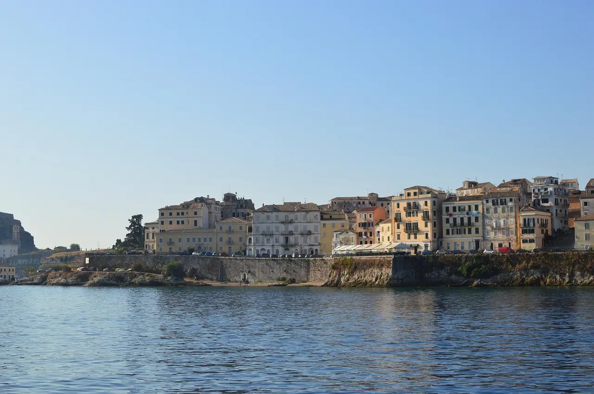

Europe is a continent where history, culture, and modern life blend seamlessly. From the romantic streets of Paris to the ancient ruins of Rome and the artistic energy of Barcelona, each city, each country offers something unique.
Traveling through Europe can be as budget-friendly or as indulgent as you like. With affordable public transport, budget airlines, and countless free attractions, you don’t need to spend a fortune to explore its charm.

Ideas for what to see and do in Europe
Europe is a huge diverse continent with an amazing history, architecture, traditions, diverse cultures which blend seemingly and coexist one next to another. Europe is place which offers never ending posibilities to what you can do or see from anything from watching Nortern lights and exploring viking heritate in Scandinavia, visiting mediaval castles and towns, experience smoke filled cafes in Netherlands, relaxing on countless beaches, hiking beautiful mountains to taking a part in Octoberfest or Tomatina, which will make you always always find something new and keep coming back.
Get lost in the streets of Prague
They call Prague the city of a thousand spires — and it truly lives up to the name. Split by the winding Vltava River, this historic capital blends Gothic, Romanesque, Baroque, and Renaissance styles into one breathtaking cityscape. For me, Prague feels magical every time I return. I love taking the metro to Old Town Square watch the iconic Astronomical Clock, then wandering through cobbled streets on my way up to Strahov Monastery. The climb is long and uphill, but the reward — a hearty meal and a cold Czech beer — is worth every step. Prague have it all, beautiful parks, historic landmarks, green leafy areas, huge number or nightclubs, restaurants and bars where you can experience the Czech culture.
It is not the cheapest to visit but if you are savvy and visit out of tourist and holiday seasons even though Christmas markets in Old Town Square are worth the extra money, and if you go just further away to the tourist circle you not only save money, but will have even more authentic experience
Relax on the Greek Islands
Santorini, Mykonos, Crete — each Greek island has its own personality. Swim in crystal-clear waters, explore whitewashed villages, and savor fresh seafood by the sea. Whether you’re after vibrant nightlife or quiet hidden beaches, Greece has an island for every kind of traveler.
Sample wine around the Europe
Europe is home to some of the world’s most famous wine regions. Sip port in Porto, tour the vineyards of France’s Loire Valley, discover Spain’s bold Rioja reds, or spend a day in a rustic wine cellar in Moravia in the Czech Republic. Whether you’re a casual taster or a wine enthusiast, Europe will delight your palate at every stop.
Go outdoors
Europe’s landscapes are as diverse as its cultures. Chase the Northern Lights and soak in thermal lagoons in Iceland, climb Ben Nevis or explore Snowdonia in the UK, hop between the Channel Islands, or ski down the slopes of the Alps. If you love the outdoors, Europe offers endless opportunities for adventure in every season.
How to get around

The beauty of traveling in Europe is how easy it is to get around. Once you are in Europe, you will find the most smooth way to get around. The continent has a fantastic transport network — from international flights, trains, buses, and ferries to local options like trams, underground systems, and city buses. It’s highly unlikely you’ll ever be stranded in a European city or even a mid-sized town. Public transport is safe, convenient, and comfortable, and thanks to the EU’s open borders, moving from one country to another is simple. Gone are the days of waiting in long queues just to cross a border..
Travelling by public transport
Travelling by bus is one of the most affordable and convenient ways to explore Europe. Almost every city or town has its own network of buses, trams, underground systems, or even trolleys, which are easy to navigate and usually cost between €1 and €3 per ride. Long-distance buses such as the most popular Flixbus or Megabus are generally comfortable, reliable, and budget-friendly with amenities such as Wi-fi and toilets. From my experience in most cases, bus terminals are located close to the city center, which is especially helpful when you’re dragging a suitcase or backpack through an unfamiliar place. The last thing you want is a complicated journey just to reach your accommodation.
Travelling by train
Trains are one of the most comfortable and scenic ways to explore Europe. Prices vary depending on the country and whether you choose high-speed or regional services, but rail travel is usually reliable and stress-free. Each country has its own train operators, such as Trenitalia in Italy, Renfe in Spain, and Deutsche Bahn in Germany. On top of that, there are fantastic international options like Eurail and Interrail, which offer passes that can save you a lot of money if you’re visiting multiple destinations. Non-EU residents can buy a Eurail Pass, while EU residents can opt for an Interrail Pass.
You can learn more about train companies and routes at Trainline, a useful platform for planning and booking rail travel across Europe.